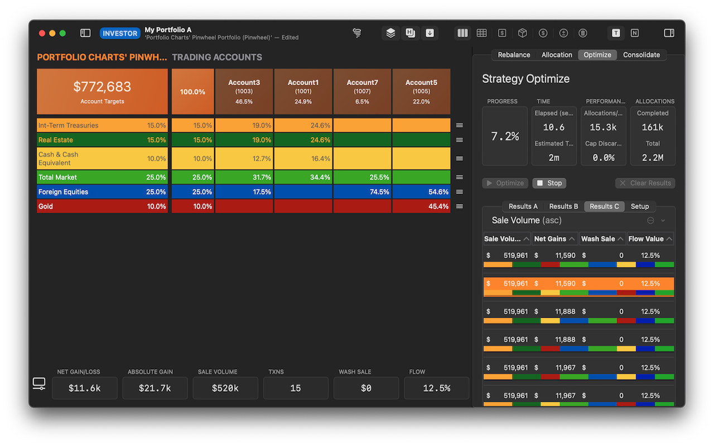
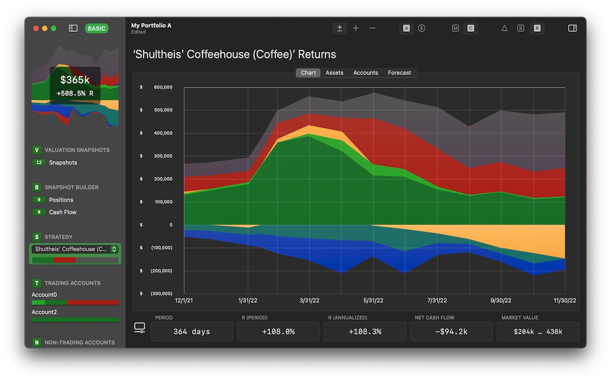

FlowAllocator / FlowWorth Two Power Tools for the Do-It-Yourself Investor |
FlowAllocator / FlowWorth Two Power Tools for the Do-It-Yourself Investor |
IMPORTANT NOTE on August 2022 - FlowAllocator and FlowWorth are now open source. All ‘Investor’ features that were formerly an in-app purchase are now available to all users.
FlowAllocator and FlowWorth are apps for the do-it-yourself investor.
They offer features accessible to those new to investing, as well as sophisticated capabilities for those who are managing multiple investment strategies across multiple accounts.
They provide you flexibility in managing your investment portfolio and can help you save time, gain insight, and discover new opportunities.
Your privacy is paramount. Financial data in FlowAllocator and FlowWorth stays local to your computer. None of it is uploaded to the cloud. No connection to remote providers is involved.

|

|
OpenAlloc is the open source framework upon which FlowAllocator and FlowWorth are built. It includes the AllocData data model and FINporter import framework projects.
AllocData is the data model describing the format for import files, export files, as well as the storage of your investing data in allocatz and worthz document files. (source at github)
FINporter is the open import framework, providing support for transforming position and transaction data from brokerage export files. Currently two brokerages are supported. (source at github)
FlowAllocator and FlowWorth require macOS Big Sur (11.0) or later, running on Intel or Apple Silicon.